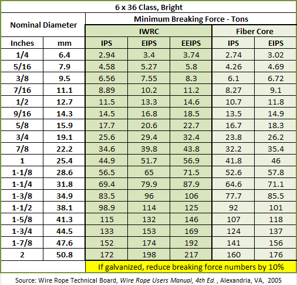

crane roller
Table of Contents
- 1. Σύστημα ανύψωσης
- 1.1. Δύναμη ανύψωσης
- 1.2. Υπολογισμός συστήματος ανύψωσης
- 1.3. Ισχύς ανύψωσης
- 1.4. Ροπή στρέψης τυμπάνου περιελιξης
- 1.5. Στροφές τυμπάνου περιέλιξης
- 1.6. Επιλογή ανεμιστήρα
- 1.7. Επιλογή συρματόσχοινο
- 1.8. Διαστάσεις σωλήνα συρματοσχοινου
- 1.9. Αξονας στρέψης συρματόσχοινου
- 1.10. Ρουλεμαν
- 1.11. Εσωτερική σωλήνα συρματοσχοινου
- 1.12. Υπολογισμός σχέσης μετάδοσης
- 1.13. Πλανητικός μειωτήρας
- 1.14. Διαστάσεις
1. Σύστημα ανύψωσης
1.1. Δύναμη ανύψωσης
Η μεγιστη δύναμη ανύψωσης είναι:
| Είδος δύναμης | Τιμή(Ν) |
|---|---|
| Μέγιστη δυνατότητα ανύψωσης: | 20000 |
| Συρματόσχοινο: | 860 |
| Γαντζος | 70 |
| Αθροισμα δύναμης F: | 20930 |
| 20,93kN |
1.2. Υπολογισμός συστήματος ανύψωσης
1.3. Ισχύς ανύψωσης
H απαιτούμενη ισχύς είναι:
\[W_{lift} = F \times u\],
όπου F η δύναμη ανύψωσης \(F = 21kN\)
u η ταχύτητα ανύψωσης \(u = 12\dfrac{m}{min}\)
| Δυναμη ανύψωσης [F] | 21 | kN |
| Ταχύτητα ανύψωσης [u] | 12 | \(\dfrac{m}{min}\) |
| Wlift | 4200. | W |
1.4. Ροπή στρέψης τυμπάνου περιελιξης

Η ροπή στρέψης από την ανύψωση του φορτίου είναι:
\[Μ_{lift} = F \times R \]
| Δυναμη ανύψωσης [F] | 21 | kN |
| Διάμετρος τυμπάνου | 350 | mm |
| Mlift | 3.675 | N*m |
1.5. Στροφές τυμπάνου περιέλιξης
\[u_{lift} = \omega \times R \]
\[\omega = \frac{u_{lift}}{R} \]
| Ταχύτητα ανύψωσης [u] | 12 | \(\frac{m}{min}\) |
| Διάμετρος τυμπάνου [D] | 350 | \(mm\) |
| \(\omega\) | 69 | rpm |
1.6. Επιλογή ανεμιστήρα
Επιλέγεται ηλεκτροκινητήρας:
| Ισχύς | 4 | kW |
| Στροφές λειτουργίας | 750 | rpm |
1.7. Επιλογή συρματόσχοινο
Επιλέγεται συματόσχοινο με διάμετρο 6.4mm σύμφωνα με τον παρακάτω πίνακα:

Για μήκος περίπου 3m είναι:
| Διάμετρος συρματόσχοινο | 6.4 | mm |
| Επιφάνεια | 32.1536 | \(mm^2\) |
| Μήκος | 3000 | mm |
| Όγκος | 96460.8 | mm3 |
| Διάμετρος τυμπάνου | 350 | mm |
Η σχέση εξωτερικής διαμέτρου τυμπάνου και μήκους είναι:
| Rin | Rout | L | |
|---|---|---|---|
| 175 | 300 | 517 | |
| 175 | 350 | 330 |
1.8. Διαστάσεις σωλήνα συρματοσχοινου
| DN | NB(inch) | ASME | SCH10 | |
|---|---|---|---|---|
| 350 | 14" | 355.6 | 6.35 | 7.92 |
1.9. Αξονας στρέψης συρματόσχοινου
Η ροπή στρέψης είναι: \(Τ:3675Nm\)
| T | 3675 | 3675 | Nm | ||
| t | 2.3 | 0.6 | mm | ||
| D | 21.7 | 20 | mm | ||
| A | t*D*π | 156.7174 | 37.68 | mm2 | |
| τ | \(\frac{T}{2tA}\) | 5.1 | 81.3 | MPa | |

1.10. Ρουλεμαν
Επιλέγεται τύπος ρουλεμάν: SKF-6404
Τεχνικά χαρακτηριστικά 1
| Basic dynamic load rating | 30.7 kN |
| Basic static load rating | 15 kN |
| Bore diameter | 20 mm |
| Outside diameter | 72 mm |
| Width | 19 mm |
Τεχνικά χαρακτηριστικά 1
| Basic dynamic load rating | C | 30.7 kN |
| Basic static load rating | C0 | 15 kN |
| Fatigue load limit | Pu | 0.64 kN |
| Reference speed | 24 000 r/min | |
| Limiting speed | 15 000 r/min | |
| Minimum load factor | kr | 0.035 |
| Calculation factor | f0 | 11 |
1.11. Εσωτερική σωλήνα συρματοσχοινου
Πατάει στην εξωτερική του ρουλεμαν
| Diameter | 76.3 |
| Wall thickness | 2.8 |
| Inside diameter | 70.7 |
1.12. Υπολογισμός σχέσης μετάδοσης
| Στροφές ΗΚ | \(n_{motor}\) | 1400 | rpm | |
|---|---|---|---|---|
| Μέση ταχύτητα ανύψωσης | \(u_m\) | 12 | m/min | |
| Εσωτερική διάμετρος τυμπάνου | \(d_w = 2 \times r_w\) | 400 | mm | |
| Αριθμος συρματοσχοίνων | \(k\) | 2 | ||
| Περιστροφική ταχύτητα τυμπάνου | \(n_{winch} = k \times \dfrac{u_m}{r_w}\) | 120 | rpm | |
| Σχέση μετάδοσης τυμπάνου | \(i_1 = \dfrac{1}{k} \times \dfrac{n_{motor}}{n_{winch}}\) | 11,66 | ||
| Από πίνακα σχέσης μετάδοσης επιλέγεται | \(i_{total}\) | 12 | ||
| Εσωτερική διάμετρος τυμπάνου | \(d_{in}\) | 350 | mm | |
| Εξωτερική διάμετρος τυμπάνου | \(d_{out}\) | 400 | rpm | |
| Ταχύτητα max | 8,75 | |||
Η διάμετρος του τυμπάνου επηρρεάζει την ταχύτητα ανύψωσης, για σταθερές στροφές τυμπάνου.
1.13. Πλανητικός μειωτήρας
https://en.wikipedia.org/wiki/Epicyclic_gearing
Τα στάδια του πλανητικού μειωτήρα είναι:
| Στάδια πλανητικού μειωτήρα | Σχέση μετάδοσης | |
|---|---|---|
| Στάδιο 1 | \(i_1\) | 4 |
| Στάδιο 2 | \(i_2\) | 3 |
| \(i = i_1 \times i_2\) | 12 |
1.14. Διαστάσεις
| Διάμετρος δακτυλιου | \(D_r\) | 270 | mm | |
| Σχέση μετάδοσης | \(i\) | 3 | ||
| Διάμετρος κεντρικού | \(d_r\) | 90 | mm |